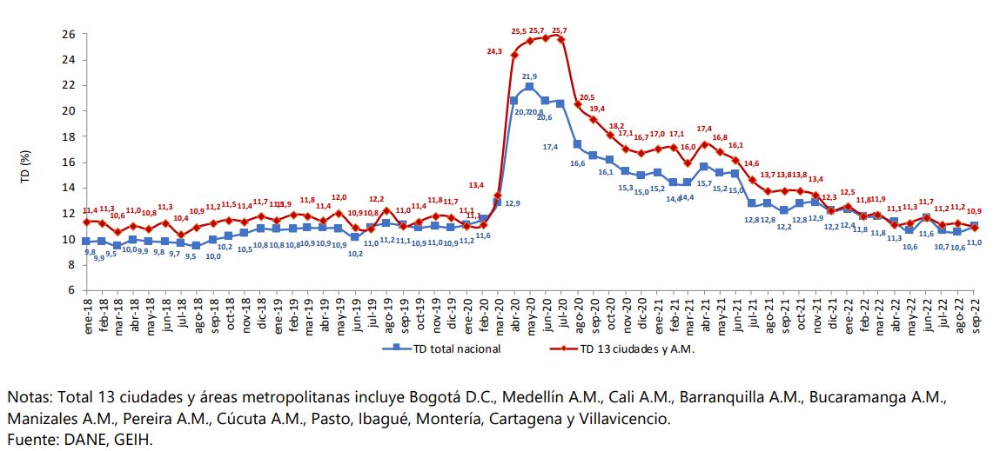

En este documento se pretende tratar de comprender la inflación, su definición, causas efectos y referencias, tanto nacionales, como mundiales.
La inflación es un fenómeno económico que muchos conocen o han escuchado hablar de ella, pero que pocos comprenden su naturaleza, causas y efectos, entre sus consecuencias se encuentran cambios importantes en la calidad de vida y de la economía tales como en artículos de consumo diario, bienes de consumo y servicios de los que muchas personas dependen del día a día para sus necesidades. La inflación puede ser muy peligrosa para cualquier mercado, puede destrozar economías enteras con todas las consecuencias socio económicas que trae consigo. Es importante tener cierta claridad en cuanto al concepto de inflación se refiere, de esa forma se puede establecer un posicionamiento al criterio en el mercado para tomar las mejores decisiones económicas posibles en base al contexto económico
A continuación, se intentará dar claridad al respecto, para comprender sus causas y sus consecuencias, posibles soluciones y métodos de control inflacionarios con algunos datos nacionales e internacionales para establecer un concepto general.
Se le conoce como inflación al aumento sostenido del precio de los bienes y servicios que existen en un mercado en el transcurso de un determinado periodo de tiempo. Esto significa que con la unidad monetaria con la que se esté operando en determinada región se van a adquirir menos cantidad de bienes y servicios, es decir, que la inflación manifiesta la disminución del poder adquisitivo que tenía la moneda.
el IPC o índice de precios al consumidor es una medida del cambio que se da en el precio de bienes y servicios que representan el consumo de los hogares de un país conocido como canasta, está sirve para:
Para calcular el IPC, el dane registra el precio de los 443 artículos que componen la canasta familiar entre los diferentes distribuidores (Tiendas de barrio, supermercado, plaza de abastos, etc) repartidos en las 38 ciudades del país, una vez registrado los precios, se comparan con los resultados de tiempos anteriores.
Inflación por politica monetaria: Es cuando una política la cual es realizada por el banco central incrementa la emisión de dinero por encima del que se encuentra circulando por el territorio, esto produce la pérdida de valor del dinero actualmente circulando, teniendo como consecuencia el aumento de precios de los bienes y servicios.
Inflación por consumo o demanda: Sucede cuando la demanda de un bien excede la capacidad de producir este mismo, se toman como medidas el aumento de precio de este mismo bien o servicio
Inflación por costos: Ocurre cuando el precio de las materias primas aumenta, provocando así que el productor, para no perder dinero, incremente sus precios.
Inflación por especulación:Este ocurre cuando un especulador incrementa artificialmente la demanda de un bien o servicio y lo vende a futuro con un precio muy alto al original, esto puede causar que el mercado de ese bien o servicio quede en muy mal estado económico
Inflación generada por expectativas de inflación: ocurre cuando se prevé un fuerte incremento futuro en los precios y por ende, se comienzan a ajustar los precios desde antes para poder cubrir los costos futuros de ese bien o servicio.
Inflación generada por puja distributiva: sucede cuando los trabajadores piden aumentos de salarios para contrarrestar los efectos de la inflación, esto provoca que, al haber un aumento de salario, hay también un aumento de precios por parte de los empresarios
Acumulativa: ocurre cuando el precio de los bienes y servicios aumenta y, a la par, sus costes de producción.
Imprevista: no se puede prever, ya que puede ser debida a problemas externos, como la caída de una moneda extranjera.
Anticipada:se puede prever, ya que se ve reflejada en el mercado de capitales.
Galopante: ocurre cuando hay un aumento de precios, esto se ve reflejado en un aumento de salarios y, a la vez, el aumento de gastos, provocando así un alza de precios.
Efectos Positivos:
Efectos negativos:
Políticas Monetarias: Las políticas tienen como objetivo mantener una tasa de inflación estable, alcanzar una óptima tasa de crecimiento y mantener la economía estable, para lograr esos objetivos existen diferentes esquemas, pero todos se basan en los principios de la inflación.
Reducción o aumento de tasas de interés: Dependiendo de cómo se comporte la inflación, los bancos centrales de cada región pueden aumentar la tasa de interés para que se expidan menos créditos y préstamos, desacelerando la economía debido a la reducción de la necesidad de imprimir más capital en el caso de una inflación alta, o bajar la tasa de interés para incitar más préstamos en caso de una baja inflación
Reducir el consumo de energía: Al reducir el consumo de la energía en todas sus formas (gas, electricidad, gasolina, petróleo, etc), se podrá reducir el costo de producirlas y por ende lo que se paga por ellas, y más si estas son exportadas.
Economía: en el siguiente espacio se va a presentar datos sobre algunas de los temas que conforman la economía colombiana
| Año | Cafe | Carbon | Petroleo | |||
| Miles de dolares |
Toneladas Metricas |
Miles de dolares |
Toneladas Metricas |
Miles de dolares |
Toneladas Metricas |
|
| 2017 | 2.513.780 | 710.440 | 7.389.996 | 105.235.591 | 13.308.015 | 40.484.698 |
| 2018 | 2.267.511 | 710.836 | 7.447.913 | 86.892.110 | 16.842.687 | 38.989.810 |
| 2019 | 2.281.674 | 753.247 | 5.668.329 | 74.696.234 | 15.961.953 | 39.822.831 |
| 2020 | 2.446.598 | 693.071 | 4.165.865 | 71.190.063 | 8.754.767 | 35.285.184 |
| 2021 | 3.091.838 | 685.073 | 5.652.258 | 59.632.793 | 13.514.411 | 31.043.175 |
Los datos anteriores registran el ingreso legal de mercancías que provengan de otros países o de una zona franca colombiana, hacia el territorio aduanero nacional. estas cifras se producen teniendo en cuenta las declaraciones de importación presentadas a las diferentes administraciones de aduanas del país, y son recogidas estadísticamente para presentarlas a las entidades financieras autorizadas para recaudar los tributos aduaneros estas estadísticas de importaciones son producidas por la dirección de impuestos de aduanas nacionales (DIAN)
a continuación se presenta una gráfica con los resultados teniendo en cuenta los años entre 2018 y 2022
en el siguiente espacio se va a presentar datos sobre algunas de los temas que conforman la sociedad colombiana
| Año | 2017 | 2018 | 2019 | 2020 | 2021 |
| Personas por hogar | 3,20 | 3,15 | 3,10 | 3,8 | 3,7 |
| Personas viviendo en arriendo | 39,5% | 33,8% | 35,7% | 36,9% | 38,6% |
| Acceso a servicios públicos | 88% | 87,6% | 88,1% | 89,4% | 90% |
| Acceso a internet | 53,9% | 52,3% | 51,1% | 56,5% | 60,5% |
| Acceso a salud | 94,6% | 93,6% | 92,8% | 93,2% | 93% |
| Acceso a educación | 80,3 | 79,3% | 79,9% | 79,1% | 88% |
| Percepción de pobreza | 30,4% | 35,9% | 37,9% | 38,2% | 46,7% |
| Año | 2017 | 2018 | 2019 | 2020 | 2021 |
| Personas por hogar | 3,20 | 3,15 | 3,10 | 3,8 | 3,7 |
| Personas viviendo en arriendo | 39,5% | 33,8% | 35,7% | 36,9% | 38,6% |
| Acceso a servicios públicos | 88% | 87,6% | 88,1% | 89,4% | 90% |
| Acceso a internet | 53,9% | 52,3% | 51,1% | 56,5% | 60,5% |
| Acceso a salud | 94,6% | 93,6% | 92,8% | 93,2% | 93% |
| Acceso a educación | 80,3 | 79,3% | 79,9% | 79,1% | 88% |
| Percepción de pobreza | 30,4% | 35,9% | 37,9% | 38,2% | 46,7% |
¿Cómo se calcularon estos datos?: Estos datos se calcularon haciendo uso del Índice de precios al consumo armonizado (IPCA)
Índice de precios al consumo armonizado (IPCA): El Índice de precios de consumo armonizado (IPCA) es un indicador estadístico cuyo objetivo es proporcionar una medida común de la inflación que permita realizar comparaciones internacionales
Función: El Índice de Precios de Consumo Armonizado (IPCA) tiene como objetivo proporcionar una medida comparable de la inflación para todos los países de la Unión Europea.
Es un indicador económico que mide la evolución de los precios de los bienes y servicios de consumo adquiridos por los hogares y se calcula de forma armonizada para todos los países
¿Por qué lo usamos?: Hemos usado este método debido a que este trabajo se basa en comparar la calidad de vida de los colombianos con otros países que tengan una inflación parecida, además como es armonizado, está ya se usa para comparar la inflación internacionalmente.